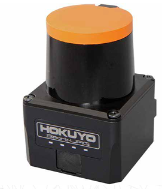
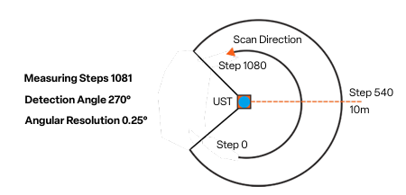

LaserScan Data¶
Before writing any code, it is important to understand what scan data is available and how it is structured. The following ROS 2 commands allow you to discover the /scan topic, inspect its message type, and explore the data used for Automatic Emergency Braking (AEB).
Finding the /scan Topic¶
First, confirm that the lidar scan topic exists.
ros2 topic list
ros2 topic list | grep scan
If /scan appears in the list, the lidar is publishing data and you are ready to proceed.
Checking the Message Type¶
Next, verify the type of message being published on /scan.
ros2 topic info /scan
You should see output similar to:
Type: sensor_msgs/msg/LaserScan
This tells us that scan data is published using the LaserScan message.
Inspecting the LaserScan Message Definition¶
To see what information is contained in each scan message:
ros2 interface show sensor_msgs/msg/LaserScan
This is one of the most important steps. It shows all available fields, including:
ranges[]– distance measurements in metersangle_min,angle_max,angle_increment– used to map array indices to anglesrange_min,range_max– valid sensor distance limitsheader.frame_id– the coordinate frame of the scan data
Echoing Live Scan Data¶
To view raw scan data as it is published:
ros2 topic echo /scan
This produces a large amount of output. More student-friendly options include:
Show only a single scan message:
ros2 topic echo /scan --once
Show a compact portion of the message:
ros2 topic echo /scan --once | head -n 60
Understanding /scan Output (LaserScan)¶
The /scan topic publishes lidar data using the sensor_msgs/msg/LaserScan message. The most important field for Automatic Emergency Braking (AEB) is ranges[] — an array of distance measurements (in meters) taken at evenly spaced angles across the lidar’s field of view.
What ranges[] Means¶
ranges[]is an array of distance readings in meters.Each element corresponds to one laser ray at a specific angle.
The scan spans from
angle_mintoangle_maxin steps ofangle_increment.
From the example output:
angle_min = -2.356 rad(≈ -135°)angle_max = 2.356 rad(≈ +135°)angle_increment = 0.004363 rad(≈ 0.25° per sample)
This results in approximately a 270° field of view.
How Many Samples Are in One Scan?¶
The number of samples in ranges[] is approximately:
With the values above, this scan contains roughly 1081 distance measurements.
Mapping an Index to an Angle¶
Each index in ranges[] maps to an angle using:
ranges[0]corresponds toangle_min(far left)ranges[last]corresponds toangle_max(far right)
“Straight Ahead” Index¶
The index closest to straight ahead (0 radians) can be estimated by:
For this scan, the forward-facing index is approximately 540, near the center of the array.
Interpreting Range Values¶
Values below 1 meter indicate very close obstacles.
Values between 1–3 meters represent nearby objects.
Readings of
infor values greater thanrange_maxindicate no valid return.
In the example output, a value such as 65.53 exceeds range_max = 30.0 and should be treated as invalid for AEB calculations.
Scan Timing and Health¶
You can check how often scans are published:
ros2 topic hz /scan
A higher scan rate allows faster reaction times for braking decisions.
You can also inspect bandwidth usage:
ros2 topic bw /scan
This helps explain why ranges[] contains a large amount of data.
Confirming Frame Information¶
If you are working with angles or transforming scan data, it is important to know the coordinate frame.
ros2 topic echo /scan --once | grep frame_id
This confirms the frame in which the scan data is reported and how it relates to the rest of the robot.
Hardware: Hokuyo UST-10LX LiDAR¶
The /scan data you’re working with comes from the Hokuyo UST-10LX 2D LiDAR sensor mounted on the RoboRacer vehicle. Understanding the hardware specifications helps you interpret the scan data and design effective safety systems.


Key Specifications¶
Measurement Range
Maximum Range: 10 meters
Minimum Range: 0.06 meters (60 mm)
Values beyond these limits in
ranges[]should be treated as invalid
Field of View
270° coverage (approximately -135° to +135°)
This wide field of view allows detection of obstacles to the sides as well as front
Corresponds to the
angle_mintoangle_maxvalues you see in the scan message
Angular Resolution
0.25° per measurement (0.004363 radians)
This is the
angle_incrementvalueResults in approximately 1081 distance measurements per scan
Scan Rate
40 Hz scanning frequency
Provides scan updates 40 times per second
Critical for real-time obstacle detection and emergency braking
Accuracy
±30 mm under standard conditions
Important when calculating precise time-to-collision values
Range measurements are reliable within this tolerance


Physical Characteristics¶
Compact and Lightweight
Dimensions: 62 × 62 × 87 mm
Weight: 130 g
Minimal impact on vehicle dynamics
Environmental Protection
IP65-rated enclosure
Dustproof and water-resistant
Suitable for indoor robotics environments
Power and Communication
12V DC operation (~8W power consumption)
Ethernet interface for high-speed data transfer to ROS 2
Ensures low-latency scan data delivery
Connecting Hardware to Software¶
When you subscribe to /scan, you’re receiving data that reflects these hardware characteristics:
The
ranges[]array length (~1081 elements) comes from the 270° FoV divided by 0.25° resolutionThe 40 Hz scan rate determines how quickly your AEB system can react
The 10-meter max range defines the maximum detection distance for obstacles
The ±30 mm accuracy affects the precision of your TTC calculations
Understanding these specifications helps you make informed decisions about:
Threshold values for collision detection
Update rates for your safety node
Valid range filtering to exclude sensor noise or invalid readings